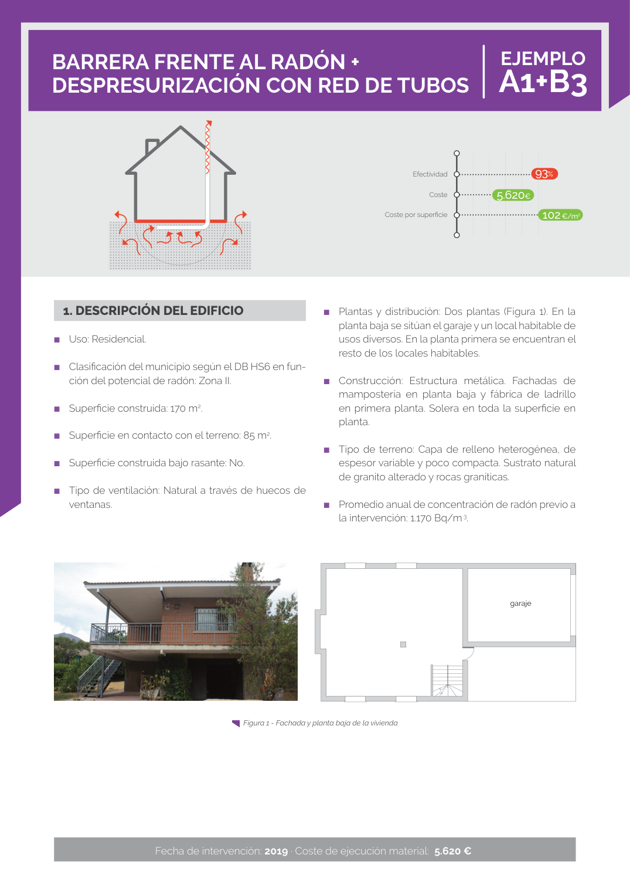
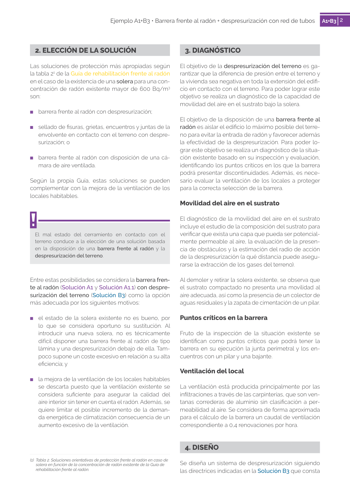

GUIA · EJEMPLO A1+B3 · versión sin-fecha · capa guia
Formatos: JSON compacto · Markdown · PDF fuente
Ámbito del documento · texto del ámbito · documento y tablas
Tipo: tablas, figuras · nivel 3 · sección estimada: 1. DESCRIPCIÓN DEL EDIFICIO · padre: a0232
EJEMPLO A1+B3 A1+B3 Figura 1 - Fachada y planta baja de la vivienda garaje Efectividad Coste Coste por superficie 93% 5.620€ 102€/m2 2 Ejemplo A1+B3 • Barrera frente al radón + despresurización con red de tubos A1+B32


PDF fuente redistribuible: copia fiel enlazada en esta página (SHA256 verificado).